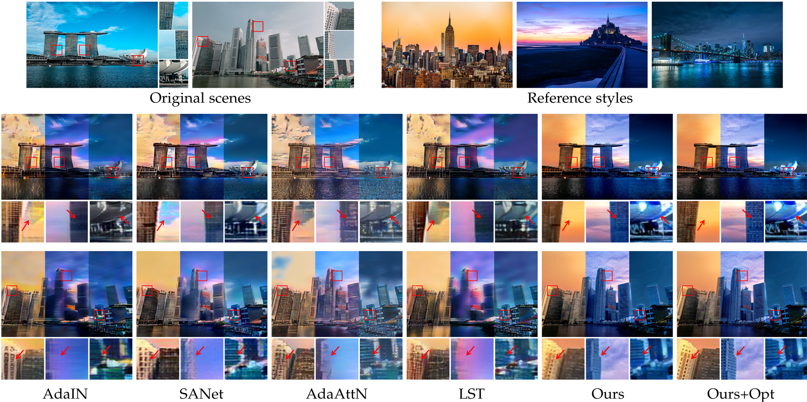

Framework

Our architectural style transfer framework has three main modules: segmentation, image translation and blending
optimization.
International Conference on Computational Photography (ICCP) 2022 (Oral)
Comparisons among image-to-image translation baselines and our proposed method. Our results have plausible colors from foreground and background, and preserve the geometry in different style transfer cases.
Comparisons among neural style transfer baselines and proposed method. While neural style transfer methods tend to have visual artifacts, our results have matched colors from foreground and background respectively, and preserve the geometry of the foreground while generating diverse cloud textures in the background.
For detailed comparison, please refer to supplmentary interactive viewer page.
@inproceedings{chen2022timeofday,
title={Time-of-Day Neural Style Transfer for Architectural Photographs},
author={Chen, Yingshu and Vu, Tuan-Anh and Shum, Ka-Chun and Hua, Binh-Son and Yeung, Sai-Kit},
booktitle={International Conference on Computational Photography (ICCP)},
year={2022},
organization={IEEE}
}
This paper was partially supported by an internal grant from HKUST (R9429) and the HKUST-WeBank Joint Lab.
DRIT++ H.-Y. Lee, H.-Y. Tseng, J.-B. Huang, M. Singh, and M.-H. Yang, “Diverse image-to-image translation via disentangled representations,” ECCV 2018.
H.-Y. Lee, H.-Y. Tseng, Q. Mao, J.-B. Huang, Y.-D. Lu, M. Singh, and M.-H. Yang, “DRIT++: Diverse image-to-image translation via disentangled representations,” IJCV 2020.
MUNIT X. Huang, M.-Y. Liu, S. Belongie, and J. Kautz, “Multimodal
unsupervised image-to-image translation,” ECCV 2018.
FUNIT M.-Y. Liu, X. Huang, A. Mallya, T. Karras, T. Aila, J. Lehtinen, and
J. Kautz, “Few-shot unsupervised image-to-image translation,” ICCV 2019.
DSMAP H.-Y. Chang, Z. Wang, and Y.-Y. Chuang, “Domain-specific mappings
for generative adversarial style transfer,” ECCV 2020.
AdaIN X. Huang and S. Belongie, “Arbitrary style transfer in real-time
with adaptive instance normalization,” ICCV 2017.
SANet D. Y. Park and K. H. Lee, “Arbitrary style transfer with styleattentional
networks,” CVPR 2019.
AdaAttN S. Liu, T. Lin, D. He, F. Li, M. Wang, X. Li, Z. Sun, Q. Li, and
E. Ding, “AdaAttN: Revisit attention mechanism in arbitrary neural
style transfer,” ICCV 2021.
LST X. Li, S. Liu, J. Kautz, and M.-H. Yang, “Learning linear transformations
for fast arbitrary style transfer,” CVPR 2019.